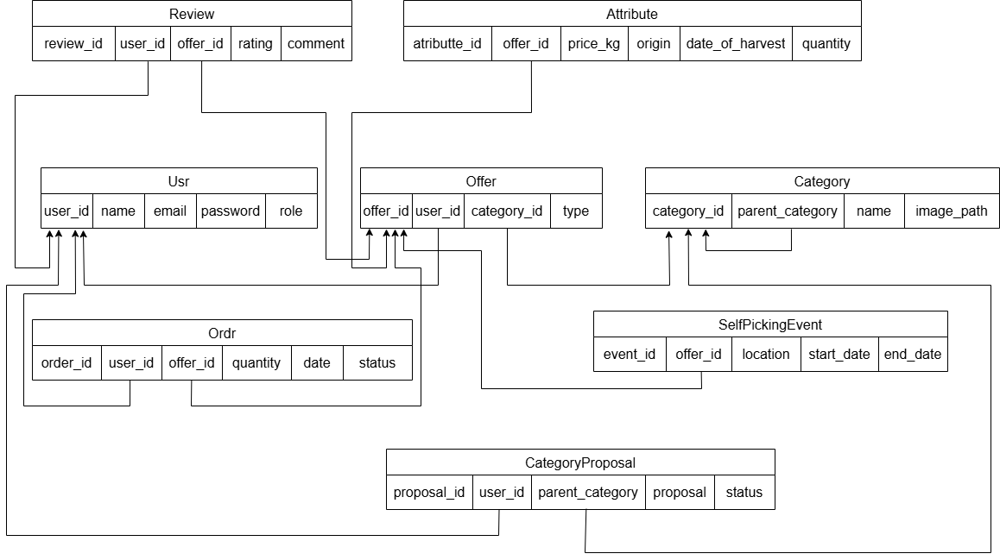

Zelný trh
- Autoři:
- Robert Zelníček
xzelni06@stud.fit.vutbr.cz
Popis činnosti v týmu:
- - filtrování (nabídek, recenzí, objednávek, událostí)
- - stránka recenzí(My Reviews)
- - stránka objednávek(My Orders)
- - stránka událostí(My events)
- Denis Milistenfer
xmilis00@stud.fit.vutbr.cz
Popis činnosti v týmu:
- - initial setup (prihlasovanie/registrovanie/odhlasovanie, navigation bar, profil info a dropdown menu)
- - správa hostingu
- - admin stránka
- - moderátor stránka
- - profilová stránka
- - návrh nových kategorií užívatelom
- - vybavovanie objednávok
- Tomáš Potůček
xpotuc08@stud.fit.vutbr.cz
Popis činnosti v týmu:
- - návrh systému ve figmě
- - vytvoření nabídek/objednávek
- - správa nabídek (upravit/smazat)
- - vyhledávací panel nabídek
- - zobrazení všech nabídek konkrétního farmáře
- URL aplikace
- https://iiszelnitrh.funsite.cz/
Uživatelé systému pro testování
| Email | Heslo | Role |
|---|
| admin@admin.com | admin | Administrátor |
| moderator@moderator.com | moderator | Moderátor |
| farmer@farmer.com | farmer | Farmár |
| customer@customer.com | customer | Zákazník |
| registered@registered.com | registered | Registrovaný uživatel |
Video
Přiložte odkaz na komentované video demostrující použití informačního systému. Zaměřte se na případy užití definované zadáním (např. registrace uživatele, správa uživatelů a činnosti jednotlivých rolí). Video nahrajte například na VUT Google Drive, kde ho bude možné přímo spustit z odkazu.
Implementace
Správa uživatelů adminom:
- - create_users.html
- - create_users.js
- - create_users.php
- - manage_users.html
- - manage_users.js
- - manage_users.php
Správa kategorií moderátorom:
- - manage_categories.html
- - manage_categories.js
- - categories.php
- - manage_proposals.php
Schvalovanie návrhu kategorií:
- - manage_proposals.html
- - manage_proposals.js
- - get_proposals.php
- - manage_proposals.php
Editovanie profilu:
- - my_profile.html
- - my_profile.js
- - my_profile.php
Návrh nových kategorií:
- - category_proposal.html
- - category_proposal.js
- - categories.php
- - propose_category.php
Funkčnost marketu:
- - market.html
- - market.js
- - create_offer.php - zpracovává vytvořené nabídky
- - get_offers.php - načítá všechny nabídky do marketu
- - get_my_offers.php - farmář si načítá všechny svoje nabídky
- - get_offer_details.php - načítá data dané nabídky po rozkliknutí detailů
- - delete_offer.php - farmář maže vlastní nabídku
- - update_offer.php - aktualizace změn nabídky (edit)
- - place_order.php - zpracovává vytvářené objednávky uživatele
- - register_for_event.php - registrace uživatele k události samosběru
- - check_event_registration.php - kontrola zda je uživatel již registrovaný na událost
- - get_category_info.php - načte informace o kategorii (cesta k obrázku, název kategorie)
- - categories.php - načítá kategorie a podkategorie
Viřizováni objednávek:
- - orders.hml
- - orders.js
- - get_orders.php
- - manage_orders.php
Hodnotenie produktov:
- - my_orders.html
- - my_orders.js
- - save_review.php
Filtrovanie produktov:
- - market.html
- - market.js
- - get_offers.php
Obdržené hodnocení:
- - my_reviews.html
- - my_reviews.js
- - my_reviews.php
Hodnocení daného farmáře
- - view_reviews.html
- - view_reviews.js
- - view_reviews.php
Zaregistrované události
- - my_events.html
- - my_events.js
- - my_events.php
Databáze

Instalace
Stručně popište:
- softwarové požadavky:
- Potrebná verzia PHP 8.1.2 alebo novšia
- Nainštalované rozšírenie php-mysqli
- postup:
- Spustenie MySQL serveru
- Prihlásenie sa do databázového systému a vytvorenie novej databázy pre tento projekt (napr. MySQL Workbench)
- V adresári projektu je sql script pre inicializáciu štruktúry database/scheme.sql
- V súbore backend/db.php je potrebné zadať údaje pre pripojenie k databáze
- Spustenie lokálneho php serveru v koreňovom adresári projektu
Známé problémy
Nie je implementovaná správa atribútov z časových dôvodov (Dôvodu odsúhlasenia návrh systému na konzultácii čo sa neskôr prejavilo ako neriešitelné. Očividné nepremyslenie tejto časti zadania
čo môže byť patrné aj z fóra. Mať rôzne atribúty pre rôzne kategórie s rôznymi datovými typmi a zároveň umožnovať toto všetko dynamicky meniť nedáva zmysel.)